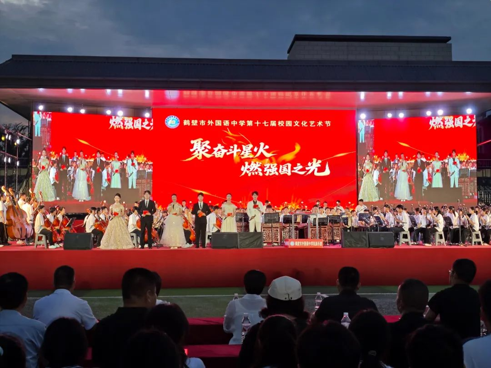
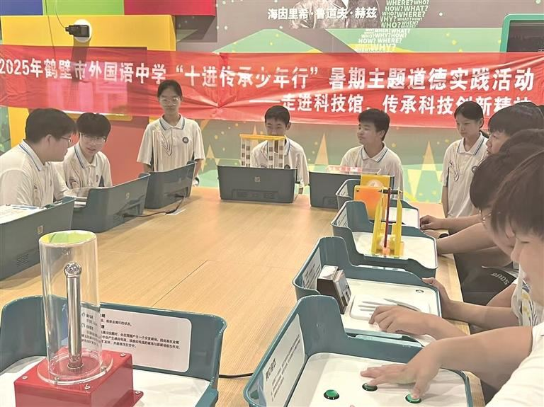
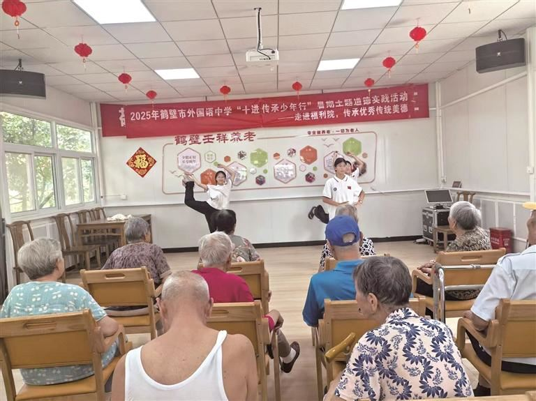
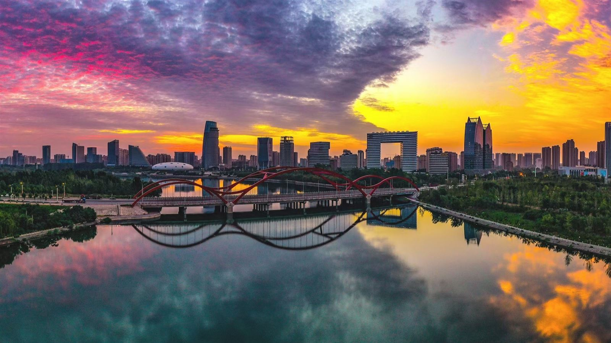
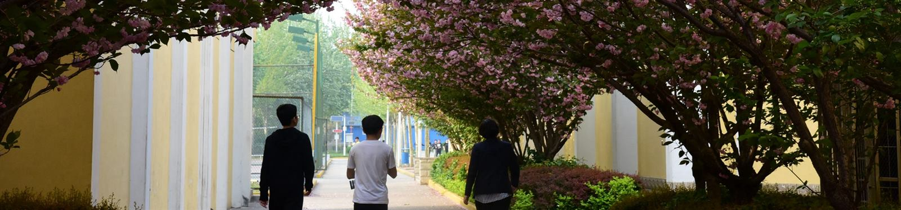
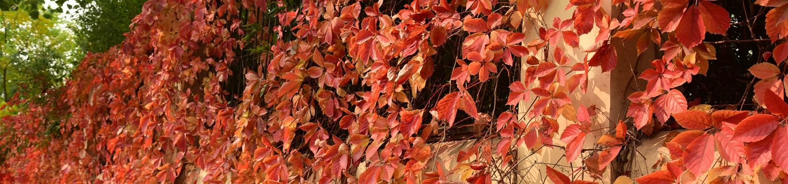
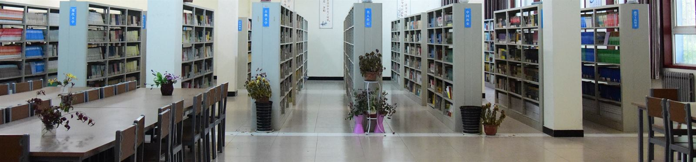
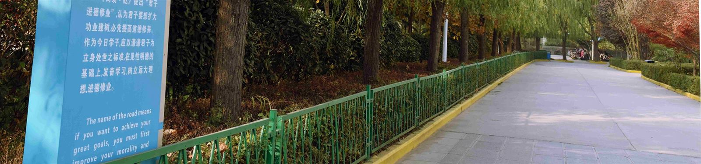
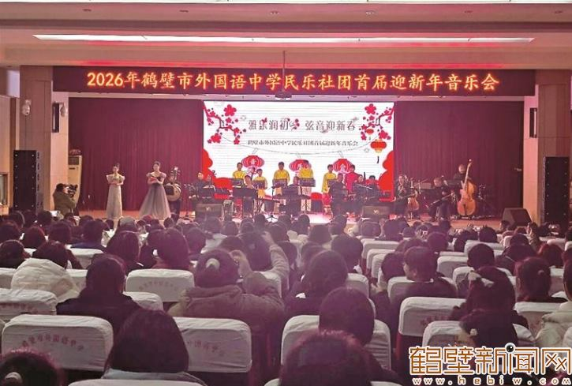
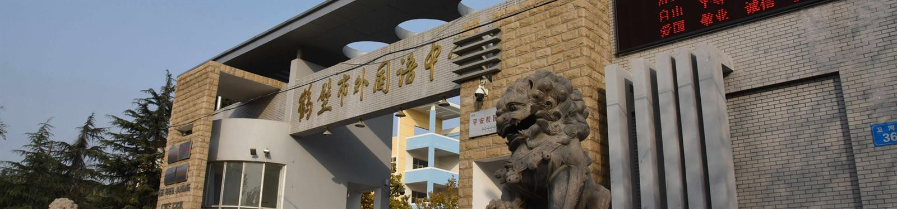

鹤壁市外国语中学
Hebi ForeignLanguage
High School
— Senior — 高中
之部
博学笃志 · 厚德尚美 校训
淇水之东，科创新城。学校 2002 年立项、2004 年建成招生， 把「为学生的终身发展奠基」写进办学理念，以「文理兼顾、突出数学和英语特色」为发展路径。 2024 年国庆假期后，高中部整体迁入东区新校区，在鹤壁东部这片新城里， 经营着一座有典籍、有民乐、有晨读声的校园。
自筹建校，二十余年成一脉
学校于 2002 年立项建设，依托老校区（鹤壁二中）、依靠自身力量自筹资金建校，2004 年建成并开始招生。 校本部位于淇滨区卫河路，校园由南至北依次为教学区、文体区、生活区， 正对大门的是启智楼，两翼为教学楼。学校长期实行东西校区办学， 高中部现整体位于东校区（科创新城）。
立项建设
依托老校区（鹤壁二中）起步，不依赖财政拨款，依靠自身力量自筹资金建校。
建成招生
校园落成并正式招生，形成教学区、文体区、生活区由南至北的完整格局，初中部与高中部同址办学。
外语特色立校
确立「质量为本、德育为先、面向全体、突出特色」的办学思路，与「文理兼顾、突出数学和英语特色」的发展战略，逐步成长为河南省示范性高中。
高中部整体迁入科创新城
由市人大代表、校长辛晓哲提出的《关于鹤壁市外国语中学高中部整体搬迁至淇滨区实验高级中学的建议》获市政府重视， 市教育体育局与淇滨区联合调研协商，推动高中部完成整体搬迁，缓解了生源过多带来的安全隐患， 也扩充了全市普通高中优质教育资源。2024 年国庆假期后，高中部正式迁入东区新校区； 2025 年起，招生报名与新生报到均在新校区办理。
博学笃志 厚德尚美
「博学而笃志，切问而近思」，语出《论语·子张》，讲的是广博地学、坚定地守； 「厚德」承《周易》「地势坤，君子以厚德载物」之意；「尚美」则寄望于审美与心性的养成。 四字一句，两句一对，把治学与做人放在同一副对联里——这也是这所学校外语特色之外的另一重底色。
—— 校训见于学校数字校园平台《学校简介》
科创新城，一座按高中标准建的新校
高中部现址位于鹤壁市淇滨区科创新城凯风路，即天赉大街与凯风路交叉口西北角。 校区即原淇滨区实验高级中学建设项目，净地范围为民信东路、天赉大街西、击鼓路南、凯风路北， 按普通高中完整功能配置建设。
教学与办公
教学用房与行政办公用房成组布置。2026 级高一新生报到即安排在北教学楼，分层分区办理，单日分流两个时段完成千余人注册。
住宿与生活
学生宿舍独立成区，住校生住宿费 250 元 / 学期。学校推行家长陪餐制度，持续优化就餐管理，保障食品安全。
运动与场地
配置篮球场、400 米环形跑道运动场及看台。日常开设「分项体育课」，并以「AI 智慧体育」辅助学生体质监测与训练。
交通与接送
校区位于科创新城路网交汇处，四周为民信东路、天赉大街、击鼓路、凯风路；地下车库设 99 个机动车位，缓解上下学时段周边拥堵。
说明：该校区为市教育体育局直属学校租赁办学项目，2026 年 6 月 3 日仍见「鹤壁市教育体育局直属学校校区租赁项目」单一来源采购公示。
正在做的事
在校长辛晓哲带领下，学校近年推进了一批具体的教育教学改革举措。 它们不写在横幅上，而写在课表、教研记录和每个班的常态里。
爱国主义大讲堂
历史组以「音乐中的历史」串起百年党史——「觉醒号角」「星火燎原」；政治组以春节、清明、端午、中秋为主线讲传统节日。情景剧《忠魂不泯》、集体朗诵《水调歌头·明月几时有》都曾在这个讲台上演。
一课一研 · 三备三研
把备课做成教研制度：一节课一次研讨，三备三研落入常规，课堂质量从备课桌上开始抓。
行为习惯养成教育
从仪容仪表到作息常规，把「习惯」当作可训练的能力，长期贯穿各年级。
分项体育课
体育课按项目分项开设，让学生按兴趣与特长选学，而不是全班做同一套动作。
AI 智慧体育
借助智能设备记录体质与运动数据，让训练有据可依，也让「体育」变得可跟踪。
民乐特长培养
开设民乐班，以「以乐育人、以美化人」为宗旨，让中华优秀传统文化有具体的载体与舞台。
全员劳动课
劳动课覆盖全体学生，不设旁观席。师生志愿者还走进鹤壁市特殊教育学校开展「手拉手」学雷锋活动，共同体验冰壶运动、创作剪纸书签。
「十进传承少年行」
学校把育人课堂搬出校门：走进体育馆强健体魄、在图书馆沉浸阅读、探秘科技馆激发创新、 深入田园体验农耕、参与社区志愿服务、走进社会福利院与爱国主义教育基地。 2025 年暑期，这一系列活动以「走进科技馆，传承科技创新精神」「走进福利院，传承优秀传统美德」等主题分批开展。
高一军训为期 11 天，8 月在操场进行，含军姿训练、队列与军歌； 体育文化节持续两个半月，以冬季长跑比赛收官。
聚奋斗星火，燃强国之光
2025 年 9 月 1 日、2 日，第十七届校园文化艺术节在学校操场连办两晚。 舞台上有古诗词朗诵《诗经·淇奥》，有 50 名学生齐练的《陈氏通背拳健身操》， 也有民乐与管弦同台的合奏。一所外国语学校的艺术节，把传统放在了正中央。

第十七届校园文化艺术节
晚会主题「聚奋斗星火 燃强国之光」。台上左侧为管弦，右侧为古筝、琵琶等民乐编制； 师生同台，台下坐满学生与家长。
民乐社团 · 节目单
就是哪吒
开场 · 民乐教师
金蛇狂舞
唢呐齐奏
晋城往事
琵琶 · 二胡
出埃及记
古筝
新赛马
二胡齐奏
希望学生们能够在学校「以乐育人、以美化人」的艺术教育中快乐成长，让中华优秀传统文化的种子在心中生根发芽。
—— 校长 辛晓哲
瞻彼淇奥，绿竹猗猗。
——《诗经·卫风·淇奥》。淇水即今淇河，穿鹤壁全境；2025 年艺术节上，这首诗被学生们重新朗诵了一遍。
有匪君子，如切如磋，如琢如磨。
影像志
本栏按影像的实际出处分区标注：高中部现场、学生活动、城市语境与校史影像， 不作混用。学校高中部于 2024 年 10 月迁入科创新城新校区， 新校区的建筑与日常影像目前公开较少，本页不作替代性拼贴。

走进科技馆
「十进传承少年行」暑期主题道德实践活动，学生在科技馆里分组操作装置。

走进社会福利院
同一系列活动中的「传承优秀传统美德」专题，学生为老人们演节目。

淇河与新城
鹤壁淇河两岸的城市天际线。学校的科创新城校区，就在这片新城的东侧。
校史影像
卫河路校本部 · Historical以下影像摄于淇滨区卫河路校本部（西校区），时间跨度为 2017 年至 2026 年初。 这一时期初中部与高中部同址办学，其中民乐社团首届迎新年音乐会以初中部师生为主场。 本校史影像用于呈现在校史脉络中的校园底色，不代表科创新城高中部新校区的建筑与场地。

春 · 花道
四月，校内那条路上花枝低垂，学生三三两两走过。

秋 · 红叶墙
爬山虎由绿转红的那半个月，是校园里最热闹的一面墙。

静 · 书库
架标依次是：现代文学、古典文学、名人传记、中国历史、教育理论。

道 · 进德修业
《周易》「君子进德修业」，配一段英文译文立在路边。

乐 · 民乐社团
首届迎新年音乐会，由初中部师生与家长代表在场观演。

门 · 石狮
卫河路校本部大门。门侧蹲着一对石狮，是很多校友记忆里的第一帧。
执掌与执教
学校现有省市级骨干教师数十名。管理团队长期扎根教学一线，并承担校际帮扶与区域教研辐射。
辛晓哲
鹤壁市第十二届人民代表大会代表，深耕教育一线 30 余年。 提出《关于鹤壁市外国语中学高中部整体搬迁至淇滨区实验高级中学的建议》并推动落地； 主张「办老百姓家门口的好学校」，推动校院共建、师资培训与课程共享，结对帮扶淇县一所中学。
汪 洋
参与学校爱国主义教育大讲堂等德育与课程活动的组织领导。
李万里
参与学校德育活动与师德师风建设工作。
教研组
历史组、政治组、艺术组等承担「爱国主义大讲堂」课程设计； 王昕、魏曼霄、胡雪等教师主讲了「音乐中的历史」「走进传统节日」等专题。
2026 届高三毕业典礼
典礼在升旗仪式中开始，校园短片回放军训、自习、百日誓师等三年片段。 教师代表寄语学子坚守初心；各班代表交还班旗，校领导颁发毕业证书； 学生代表向全体教师献花鞠躬。校长辛晓哲勉励学子放平心态迎战高考， 以感恩之心奔赴人生新赛道。现场奏响《祝你一路顺风》。
2026 年招生与报到
2026 年鹤壁市普通高中招生中，鹤壁市外国语中学面向市区招收高一新生 1250 人，为全市公办普通高中招生规模第二位。
| 学校 | 招生计划 | 学费 / 学期 | 住宿费 / 学期 |
|---|---|---|---|
| 鹤壁市高中 | 1850 人 | 840 元 | 250 元 |
| 鹤壁市外国语中学 | 1250 人 | 840 元 | 250 元 |
| 鹤壁市第一中学 | 700 人 | 740 元 | 250 元 |
| 鹤壁市综合高中 | 660 人 | 580 元 | 200 元 |
| 鹤壁市鹤山区高级中学 | 600 人 | 580 元 | 200 元 |
数据来源：鹤壁市教育体育局公布的《2026 年鹤壁高中招生计划及学校名单》。
7 月 25—26 日
报到地点为高中部（淇滨区天赉大街与凯风路交叉口西北角）， 在北教学楼现场办理。25 日上午办理 1—650 号，下午办理 651—1242 号，26 日扫尾。
840 元 / 学期
学费 840 元 / 学期；住校生住宿费 250 元 / 学期；书本费 3 年共 1500 元。 学费与住宿费分两次缴纳，走读生无需缴纳住宿费。
高中部面向鹤壁市域内招生，依据中招考试成绩择优录取，含统招生与分配生计划； 分配生计划依据各初中具备分配生资格人数按比例均衡分配，并向薄弱初中适当倾斜。 学校同时招收体育特长生（2025 年为田径 11 人、排球 5 人，须参加专业测试）， 特长生要求为应届初中毕业生。报考普通高中需生物、地理等级达到 C 以上。
挂在墙上的，和写在日常里的
学校先后获评国家、省、市级荣誉几百项。以下为其中一部分。